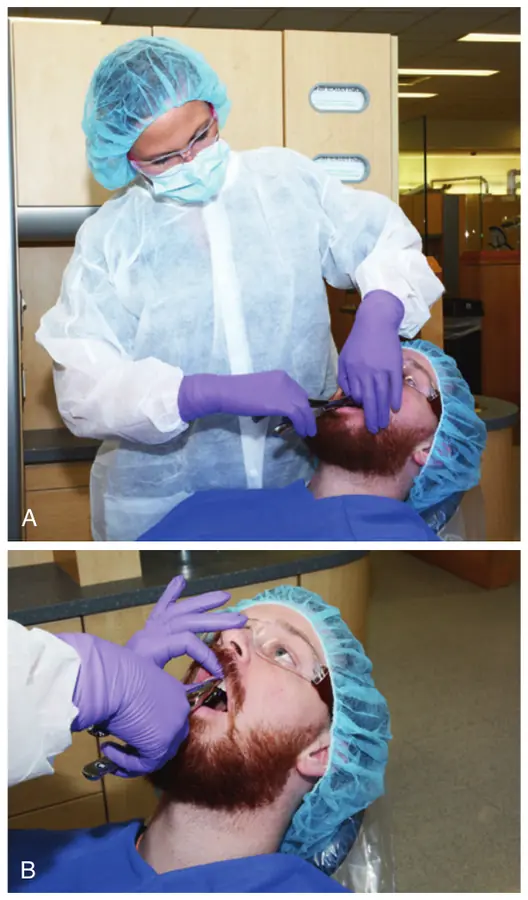
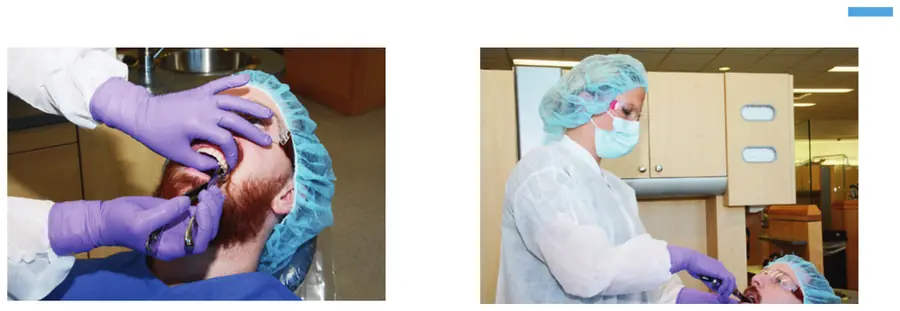

نسخه استخراجشده؛ ترجمه یا تأیید علمی انجام نشده است. وضعیت: captured
آمادهسازی. اصل احتیاط همگانی: هر بیمار را حامل بیماری منتقله از خون فرض کن. دستکش جراحی، ماسک و عینک با محافظ کناری الزامی است. مو کوتاه یا بسته و زیر کلاه جراحی — «گذاشتن موی جراح روی صورت بیمار یک نقض بزرگ تکنیک آسپتیک است». گان آستینبلند که با کثیف شدن عوض شود، و دراپ استریل روی سینهی بیمار.

پارتیشن دهانی: بسیاری از جراحان یک گاز ۴ در ۴ اینچ نیمهبازشده را شل در عقب دهان میگذارند تا اگر دندان از فورسپس لیز خورد یا زیر فشار خرد شد، در گاز گرفته شود نه بلعیده یا آسپیره. نه آنقدر عقب که رفلکس گگ را راه بیندازد، و هدفش را برای بیمار توضیح بده.
هدف وضعیت درست: جراح بازوها را نزدیک بدن نگه دارد و مچ را بهقدر کافی صاف بگذارد تا نیرو را با بازو و شانه منتقل کند نه با انگشت و دست — تا وقتی مقاومت ریشه ناگهان از بین رفت یا استخوان شکست، نیرو کنترلشده بماند.
ماگزیلا: صندلی به عقب خم شود تا پلن اکلوزال بالا حدود ۶۰ درجه با کف زاویه بگیرد؛ بالا بردن همزمان پاها راحتی بیمار را بیشتر میکند. ارتفاع طوری که دهان بیمار همتراز یا کمی پایینتر از آرنج جراح باشد. سر بیمار: کوادرانت راست بالا → سر کاملاً به سمت جراح، قدام بالا → مستقیم رو به جلو، چپ بالا → کمی به سمت جراح.
مندیبل: بیمار عمودتر بنشیند تا با دهان کاملاً باز، پلن اکلوزال موازی کف شود، و صندلی پایینتر تا بازوی جراح صافتر بماند. بایت بلاک با سایز مناسب فک را تثبیت میکند؛
بلاک خیلی بزرگ لیگامانهای TMJ را بیش از حد میکشد — معمولاً بایت بلاک کودک حتی در بزرگسال بهترین است. سر بیمار: خلفی راست پایین → سر کاملاً به سمت جراح، قدام پایین → مستقیم، جراح کنار بیمار، خلفی چپ پایین → جراح کنار بیمار میرود ولی سر آنقدر تند نمیچرخد.
شایعترین خطای وضعیتدهی: صندلی خیلی بلند. شانهها بالا میرود، انتقال درست نیرو سخت میشود و جراح خسته میشود. خطای شایع دوم: خم شدن روی بیمار و نزدیک کردن صورت به دهان او — که نور را میگیرد و به کمر و گردن فشار میآورد.
سه ماشین ساده:

هدف سهگانهی فورسپس: ۱) گشاد کردن ساکت استخوانی با فکهای گوهای و حرکت دادن خود دندان، ۲) پیچاندن ریشههای مخروطی برای پاره کردن لیگامان پریودنتال، ۳) خارج کردن دندان از ساکت.
پنج نیرو:
جمعبندی نیروها: فشار آپیکالی قوی همیشه مفید است و باید با هر بار نشستن فورسپس اعمال شود. بیشتر دندانها با ترکیب باکال و لینگوال درمیآیند. در ماگزیلا استخوان باکال نازک و پالاتال ضخیم است، پس نیروی باکال قویتر و پالاتال ملایمتر. در مندیبل استخوان باکال از خط وسط تا ناحیهی مولر نازک است، پس انسیزور، کانین و پرمولر با نیروی باکال قوی و پایدار و فشار لینگوال ملایمتر خارج میشوند.
نوع سؤال: ساخت کلمه · 4 خانه
حروف منبع: ه · ا · م · ر